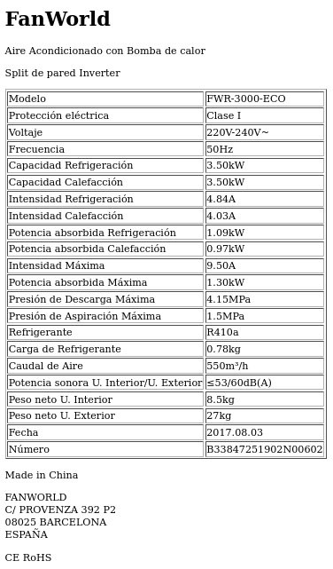
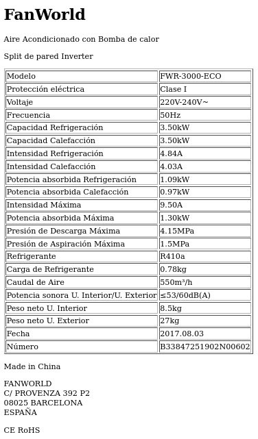

Para calcular las frigorías a partir de la capacidad de refrigeración en kW, puedes usar la siguiente fórmula: 1 kW ≈ 860 kcal/h ≈ 860 frigorías/h La capacidad de refrigeración del aire acondicionado es de 3.50 kW. Por lo tanto, calculamos las frigorías de la siguiente manera: 3.50 kW × 860 frigor ı ˊ as/kW = 3010 frigor ı ˊ as 3.50 kW×860 frigor ı ˊ as/kW=3010 frigor ı ˊ as Así que el aire acondicionado tiene aproximadamente 3010 frigorías.